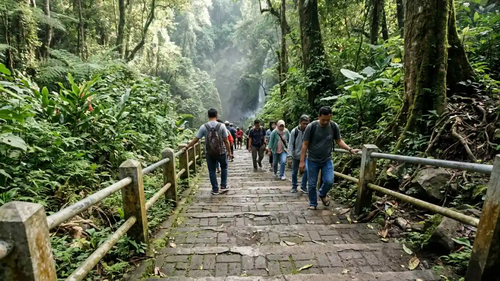

Rute ke air terjun Pacet Mojokerto dimulai dari Kota Mojokerto menuju Kecamatan Pacet sekitar 30 menit, lalu mengikuti petunjuk arah ke Desa Padusan atau Claket sesuai lokasi tujuan.
- Pacet berjarak sekitar 30 menit dari pusat Kota Mojokerto dan maksimal sekitar dua jam dari Surabaya.
- Pengunjung dari Malang umumnya melewati Pandaan dan Trawas sebelum menuju Pacet.
- Jalan menanjak dan berkelok sehingga kondisi kendaraan harus prima.
- Dari loket Coban Canggu, pengunjung berjalan sekitar 500 meter menuju air terjun.
- Gunakan navigasi digital untuk kondisi jalan terbaru karena situasi dapat berubah.
DAFTAR ISI
- 1. Di Mana Letak Air Terjun Pacet Mojokerto?
- 2. Bagaimana Rute dari Kota Mojokerto ke Pacet?
- 3. Bagaimana Rute dari Surabaya ke Air Terjun Pacet?
- 4. Bagaimana Rute dari Malang ke Air Terjun Pacet?
- 5. Seperti Apa Jalan dari Loket Menuju Air Terjun?
- 6. Bagaimana Kondisi Jalan dan Parkir di Kawasan Pacet?
- 7. Apa yang Perlu Disiapkan untuk Perjalanan Menanjak?
- 8. Kesimpulan
- 9. FAQ
Di Mana Letak Air Terjun Pacet Mojokerto?
Air terjun Pacet Mojokerto terletak di Kecamatan Pacet, Kabupaten Mojokerto, Jawa Timur, dengan titik populer di Desa Padusan, Desa Claket, dan jalur Pacet menuju Cangar.
Coban Canggu dan Grenjengan berada di Desa Padusan. Surodadu berada di Dusun Mligi, Desa Claket.
Watu Lumpang berada di pinggir jalur Pacet menuju Cangar, sedangkan Dlundung berada di Desa Ketapanrame, Kecamatan Trawas, yang bersebelahan dengan Pacet. Mengetahui desa tujuan membantu Anda memilih jalur dan menghindari salah belok.
Kecamatan Pacet berada di dataran tinggi sehingga perjalanan menuju lokasi mengikuti kontur menanjak. Karena itu, waktu tempuh bisa lebih lama dari perkiraan jarak di peta, terutama bila jalan padat pada akhir pekan.
Bagaimana Rute dari Kota Mojokerto ke Pacet?
Dari pusat Kota Mojokerto, ikuti jalur menuju arah Pacet ke selatan. Perjalanan memakan waktu sekitar 30 menit, kemudian lanjutkan mengikuti papan petunjuk menuju Padusan atau lokasi air terjun yang Anda tuju.
Selama perjalanan, jalan makin menanjak ketika mendekati kawasan wisata. Sepanjang jalur terdapat banyak warung, penginapan, dan area wisata lain yang bisa menjadi tempat berhenti.
Pastikan tangki bahan bakar cukup sebelum menanjak, dan gunakan gigi rendah pada tanjakan agar mesin tidak terlalu panas.
Bila tujuan Anda Coban Canggu, ikuti petunjuk menuju Desa Padusan. Setelah tiba di loket, parkir kendaraan dan lanjutkan dengan berjalan kaki. Gambaran destinasi lain yang bisa dikunjungi pada satu perjalanan ada di panduan air terjun Pacet Mojokerto.
Bagaimana Rute dari Surabaya ke Air Terjun Pacet?
Dari Surabaya, Anda dapat menuju Mojokerto lewat jalur utama Surabaya Mojokerto, lalu menyambung ke Pacet. Estimasi maksimal sekitar dua jam, bergantung kepadatan lalu lintas dan jam keberangkatan.
Berangkatlah sebelum pukul 07.00 pada akhir pekan agar terhindar dari kemacetan menuju kawasan wisata. Jam buka air terjun yang berakhir sekitar pukul 16.00 membuat keterlambatan berangkat mengurangi waktu bermain di lokasi.
Jika Anda berangkat dari Surabaya timur atau selatan, perbedaan waktu tempuh bisa bertambah, jadi andalkan aplikasi peta untuk estimasi terbaru.
Sepanjang jalur utama tersedia SPBU dan rumah makan. Manfaatkan untuk mengisi bahan bakar dan sarapan sebelum memasuki jalan menanjak.
Hindari membawa terlalu banyak barang di kendaraan roda dua karena beban berlebih menyulitkan tanjakan.
Bagaimana Rute dari Malang ke Air Terjun Pacet?
Dari Malang, rute yang sering dipilih melewati Pandaan, Trawas, lalu menyambung ke Pacet. Waktu tempuh bergantung kondisi jalan, sehingga gunakan navigasi digital untuk estimasi yang paling sesuai pada hari keberangkatan.
Trawas dan Pacet berdekatan sehingga jalur ini cocok untuk perjalanan yang menggabungkan beberapa wisata, misalnya Dlundung di Trawas dan Coban Canggu di Pacet.
Jalan di kawasan ini berkelok dan menanjak, jadi kendarai dengan hati-hati terutama saat kabut turun di pagi atau sore hari.
Jika Anda berkendara bergantian dengan teman, atur giliran pengemudi agar tidak kelelahan. Bagi yang menggunakan transportasi umum, kombinasikan angkutan menuju Mojokerto atau Pandaan lalu sewa kendaraan lokal ke lokasi. Informasi tarif dan jadwal transportasi umum dapat berubah, jadi konfirmasi sebelum berangkat.
Seperti Apa Jalan dari Loket Menuju Air Terjun?
Jalan dari loket menuju air terjun berbeda di tiap lokasi. Di Coban Canggu, pengunjung berjalan sekitar 500 meter melewati tangga paving block, sedangkan jalur Grenjengan lebih menantang.

Tangga paving block sepanjang sekitar 500 meter menuju Air Terjun Coban Canggu di Padusan, Pacet, Mojokerto. (Ilustrasi)Laman resmi pariwisata Kabupaten Mojokerto menyebut tebing Coban Canggu setinggi sekitar 80 meter, tetapi aksesnya sudah berupa tangga yang memudahkan pejalan kaki.
Pengunjung lansia atau anak kecil tetap perlu istirahat di tengah jalan karena anak tangga cukup banyak.
Grenjengan memiliki ketinggian sekitar 40 meter dengan jalur yang lebih menantang dan cocok bagi mereka yang menyukai trekking ringan.
Bawa alas kaki dengan sol kuat, air minum, dan tas kedap air untuk telepon. Daftar persiapan lengkap tersedia dalam tips berkunjung ke air terjun Pacet Mojokerto.
Bagaimana Kondisi Jalan dan Parkir di Kawasan Pacet?
Kondisi jalan menuju Pacet umumnya beraspal, tetapi menanjak dan berkelok. Area parkir tersedia di sekitar loket, namun pada akhir pekan dan hari libur bisa penuh sehingga sebaiknya datang pagi.
Kendaraan roda dua dan roda empat biasanya dapat mencapai area loket. Untuk mobil besar atau bus, tanyakan lebih dulu kapasitas parkir kepada pengelola karena sebagian lokasi memiliki ruang terbatas. Siapkan uang tunai pecahan kecil untuk tiket dan parkir.
Biaya parkir terpisah dari tiket masuk, dan sebuah daftar wisata Pacet menyebut Rp5.000 untuk kendaraan pribadi di satu lokasi. Rincian biaya lain dibahas di artikel harga tiket air terjun Pacet Mojokerto.
Apa yang Perlu Disiapkan untuk Perjalanan Menanjak?
Persiapan penting untuk perjalanan menanjak ke Pacet meliputi pemeriksaan rem, tekanan ban, bahan bakar, jas hujan, serta navigasi digital yang bekerja meski sinyal melemah di area pegunungan.
Sebelum berangkat, periksa kondisi rem dan ban, terutama bila membawa banyak penumpang. Unduh peta offline karena sinyal di kawasan perbukitan dapat melemah. Bawa jas hujan, karena cuaca pegunungan mudah berubah.
Saat menurun, gunakan gigi rendah dan hindari menekan rem terus menerus agar tidak panas. Bila hujan turun, kurangi kecepatan dan beri jarak aman.
Kehati-hatian kecil seperti ini sering menjadi pembeda antara perjalanan nyaman dan perjalanan yang melelahkan.
Kesimpulan
Rute ke air terjun Pacet Mojokerto relatif mudah, sekitar 30 menit dari Kota Mojokerto dan maksimal sekitar dua jam dari Surabaya. Pengunjung dari Malang bisa melewati Pandaan dan Trawas.
Periksa kondisi kendaraan, berangkat pagi, dan siapkan navigasi offline.